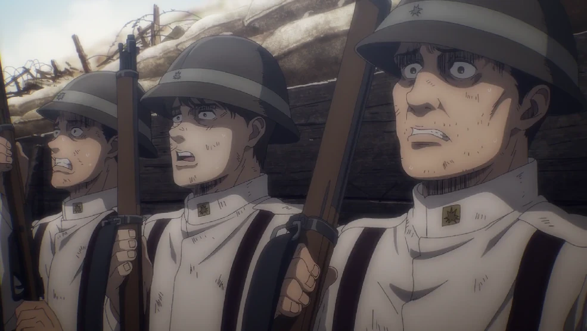

ARC 08
Marley Arc
A world beyond the walls, divided by hatred.

Overview
Several years after the events in Shiganshina, the story shifts beyond the walls to Marley, a powerful nation involved in a long-standing conflict with other countries. Through the experiences of Eldian soldiers living under Marley's rule, the arc reveals a new perspective on the world and the complicated history between Eldians and Marleyans. Among the young Eldian Warriors preparing for battle is Falco Grice, who becomes involved in the lives of his fellow candidates, including Gabi Braun. Meanwhile, Reiner Braun struggles with the memories of his past and the consequences of the mission that brought him to Paradis Island years earlier.
As political tensions rise and Marley prepares for another military operation, familiar faces begin to reappear in unexpected circumstances. The arc explores themes of prejudice, propaganda, identity, and the devastating consequences of a conflict passed down from one generation to the next.
Arc Information
| Anime | Attack on Titan |
|---|---|
| Season | Season 4 |
| Episodes | Episodes 1 – 7 (7 episodes) |
| Release Date | December 7, 2020 – January 18, 2021 |
| Manga Chapters | Chapters 91 – 105 |
| Main Location | Liberio, Marley |